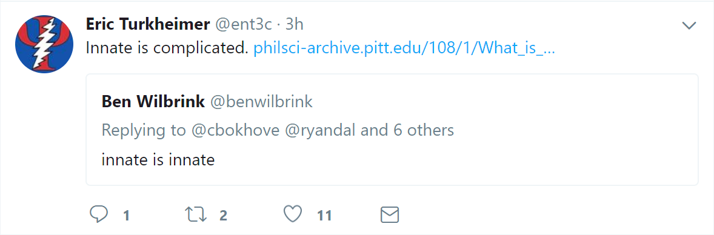

Preliminary Meeting Presentation
Andrew Dismukes
November 1, 2017
Overview
- Part One: Program Requirements
- Part Two: Dissertation Overview
- Part Three: Dissertation Manuscripts
- Part Four: Dissertation Finalization
Part One:
Program Requirements
Program Requirements
| Requirement | Accomplishment |
|---|---|
| core coursework | completed with 4.0 average |
| non-probationary status | yes |
| 4 Presentations submitted, 2 accepted | 28 accepted (11 posters, 18 talks), 1 under review |
| 2 manuscripts submitted | 10 accepted, 1 under review, 3 pending |
| Research Statement | Submitted |
| Teaching Philosophy | Submitted |
| Teaching Internship | Completed (twice) |
| Professional Society | 4 memberships |
| Teaching | 4 independent classes taught |
| 4 Service/Leadership Experiences | Numerous |
| 1 Grants, Prog. Eval, or Policy Brief | 2 PI Grants submitted (1 funded, 1 discussed) |
Requirements vs. Accomplishments
All Materials Hosted Online
Part Two:
Dissertation Overview
Why this Dissertation?
- My Story Matters
- Father therapist, ran group home
- Biochemistry undergrad, because WHY?
- Biological Psychology, because WHY?
- Volunteer experience, and...
What is the Question?
How does the stress response system change over time, especially across early development, and how does this impact health and behavior?
How do you answer such a question?

Part Three:
Dissertation Manuscripts
GENETIC AND EPIGENETIC PROCESSES IN INFANT MENTAL HEALTH

(Dismukes, Shirtcliff & Drury, in press)
RACE AND THE DEVELOPING HPA AXIS
(Dismukes, Shirtcliff, Zeanah, Jones & Drury, in preparation)
RACE AND THE DEVELOPING HPA AXIS
(Dismukes, Shirtcliff, Zeanah, Jones & Drury, in preparation)

Callous-unemotional traits are associated with blunted cortisol and increased DHEAs reactivity to stress
(Dismukes et al., in prep)
Etiology of CU Traits: Novel Genetic and Neuroendocrine Pathways
(Dismukes et al., in prep)
Part Four:
Finalizing and Future Directions
Timeline
What's My Goal?
- A benefit of making a theory explicit...is in enhancing the understanding of a particular theory, either by providing supporting or nonsupporting evidence.
- Proximal proceses as the 'engines of development'
- Everything should be as simple as can be, but no simpler.